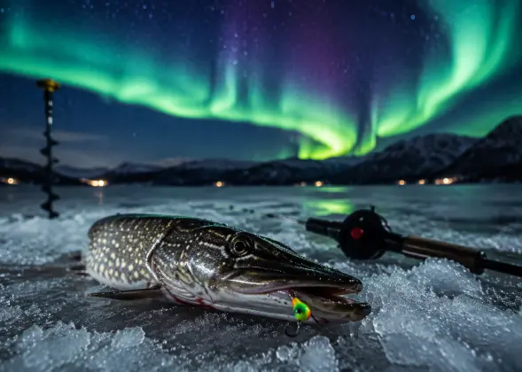

Gökyüzünün Geleneğin Bir Parçası Haline Geldiği Anlar
Kuzey ışıklarının görülebildiği bölgelerde, kış balıkçılığı gezileri genellikle hem balıkların daha sakin olduğu dönemlerden yararlanmak hem de etkileyici kuzey ışıkları manzarasının tadını çıkarmak için gece saatlerine kadar devam ederdi. Bazı kuzey balıkçılık toplulukları, aurora görüntülerini ruhlar veya atalarla ilgili folklorik inanışlarla ilişkilendirerek gece balıkçılığına pratik amacının ötesinde kültürel ve manevi bir anlam kazandırmıştır.
